Big Picture
After building and regularizing a model, a practical question remains: how do we know what to improve next? This lecture answers that question by turning model evaluation into a systematic diagnostic process.
The lecture shows that machine learning practice is not driven by guesswork alone. Instead, we can use structured evaluation, dataset splitting, validation, and learning curves to identify whether the real problem is high bias, high variance, or a poor modeling decision.
Why Diagnostics Matter
In real projects, there is rarely a “gold recipe” that tells you exactly what to do next.
Suppose a model performs badly on new data. Many actions are possible: gather more data, reduce features, add features, try polynomial terms, or tune regularization. The problem is that these actions can be expensive, time-consuming, or completely unhelpful if chosen blindly.
- get more training examples
- use fewer features
- add new features
- add polynomial features
- change λ
Without diagnostics, choosing one of these is often just guesswork based on gut feeling.
Evaluating a Learned Hypothesis
Once a hypothesis has been learned, we need a way to measure how good it really is. A low training error might look impressive, but by itself it says very little about performance on unseen data.
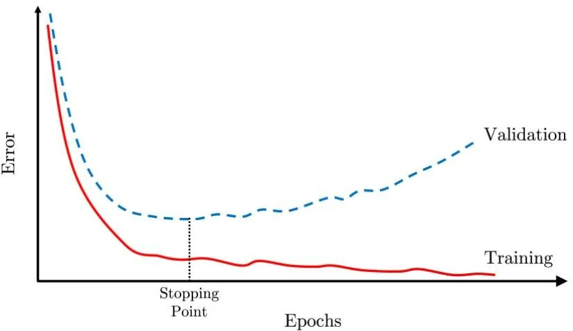
The lecture’s message is simple: training performance is not the same as real-world performance.
The Simplest Diagnostic: Train/Test Split
The first practical improvement is to stop evaluating the hypothesis only on the data used to train it.
The basic idea is to divide the dataset into two parts:
Used to learn the parameters and minimize the training cost.
Used only after training to estimate how well the learned hypothesis generalizes.
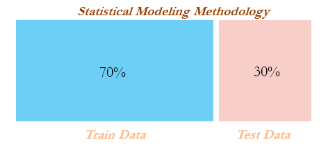
Test Error
After learning parameters on the training set, we compute an error on the test set. That error gives a more honest picture of generalization than the training error does.
Linear regression
Logistic regression
The procedure is analogous: train on the training set, then compute a test-set metric on examples never used for fitting.
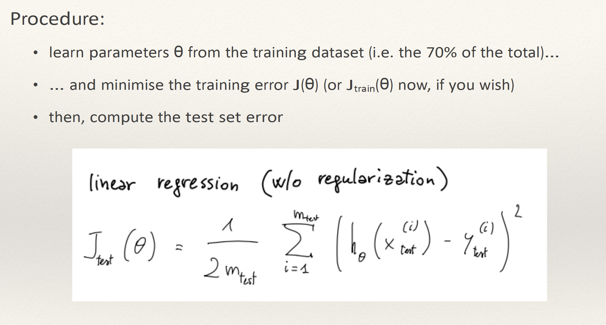
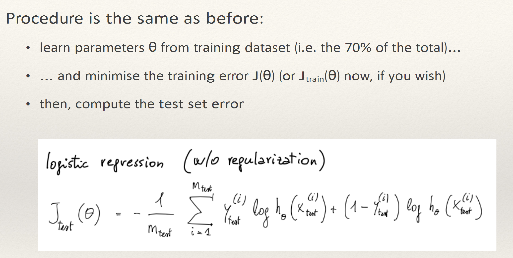
0/1 Misclassification Error
In classification, a metric that is often easier to interpret than the full cost function is the fraction of examples that the model labels incorrectly.
Here, each example contributes either:
1if the prediction is wrong0if the prediction is correct
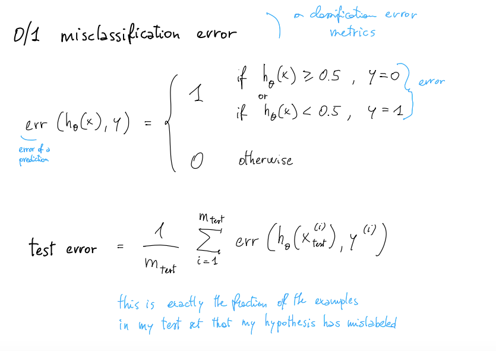
Why Train/Test Is Not Enough
Once we start comparing multiple candidate models, the test set alone is no longer sufficient.
Imagine fitting many polynomial models with degrees \(d=1,2,3,\ldots\). If we use the test set to choose the “best” degree, we are no longer using the test set only for final evaluation. We are tuning decisions against it.
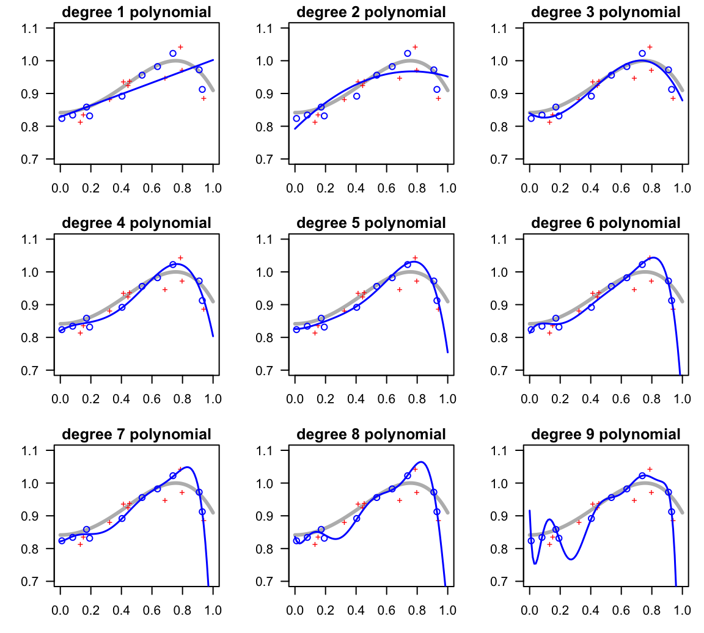
Training / Validation / Test Sets
The solution is to split the dataset into three parts:
| Subset | Main Role |
|---|---|
| Training set | Learn parameters \(\theta\) |
| Cross-validation set | Select models and tune hyperparameters |
| Test set | Estimate final generalization error |
A common split is something like 60% training, 20% validation, and 20% test.
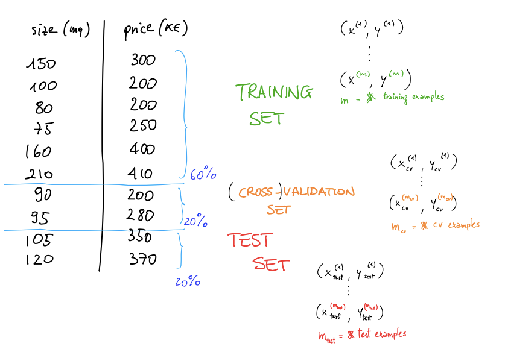
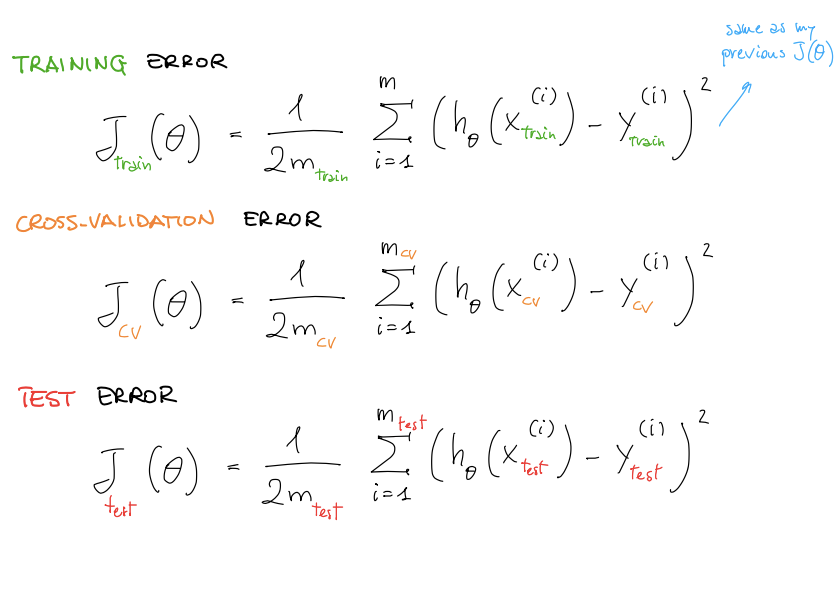
Bias vs Variance Diagnosis
When predictions are poor, the cause is very often either a high-bias problem or a high-variance problem.
High bias
The model is too simple and underfits the data.
High variance
The model is too flexible and overfits the data.
Using Model Complexity to Diagnose
In the lecture’s running example, model complexity is represented by the polynomial degree \(d\). As \(d\) increases, training error tends to decrease. But cross-validation error usually decreases only up to a point and then rises again.
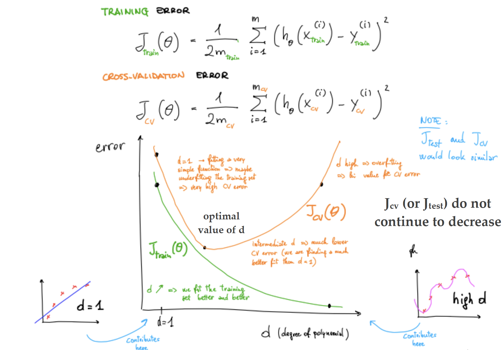
Both training and validation errors are high, and they are often close to each other.
Training error is low, but validation error is much higher.
Choosing λ with Validation
The same model-selection logic used for polynomial degree can also be applied to the regularization parameter \(\lambda\).
The basic workflow is:
- create a list of candidate values for \(\lambda\)
- train the model for each candidate
- compute the validation error for each trained model
- choose the value that gives the lowest validation error
- evaluate the final chosen model once on the test set
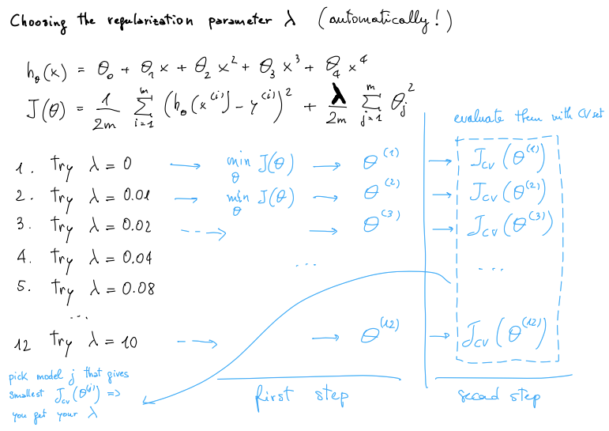
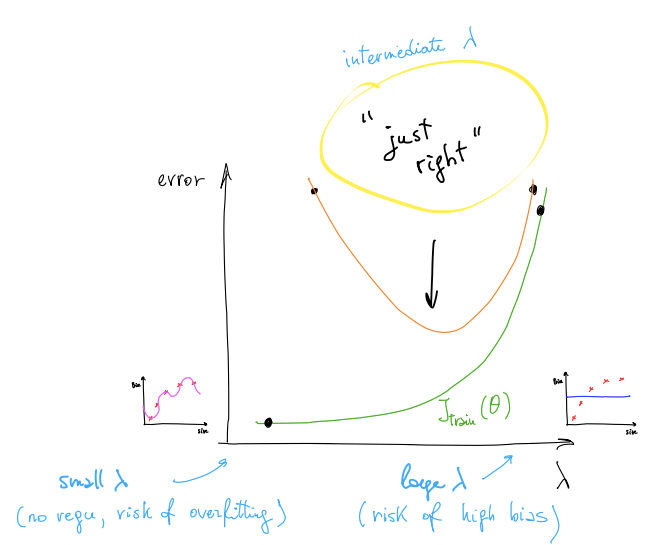
Learning Curves
Learning curves plot error against the number of training examples and are one of the most useful diagnostic tools in applied machine learning.
They are valuable both as a sanity check and as a guide for improvement. By looking at how training and validation errors evolve as the dataset size increases, we can tell whether more data is likely to help.
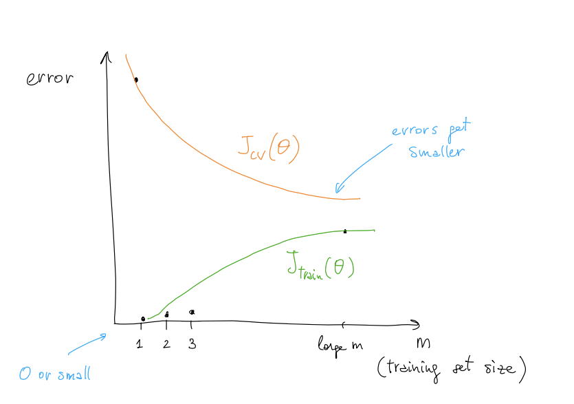
How Learning Curves Look with High Bias
In a high-bias setting, the model is too simple. As the training set gets larger, both training and validation errors remain relatively high and end up close to each other.
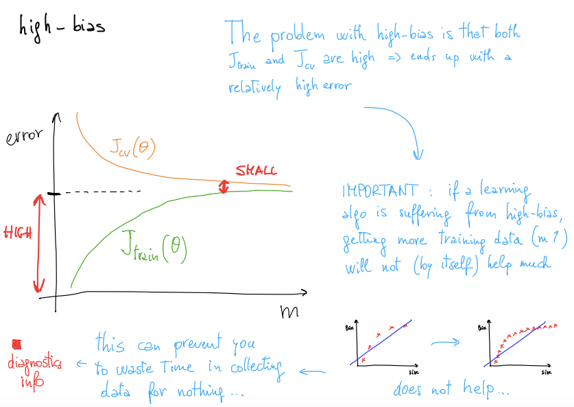
How Learning Curves Look with High Variance
In a high-variance setting, the model fits the current training examples too specifically. Training error stays low, but validation error is much higher.
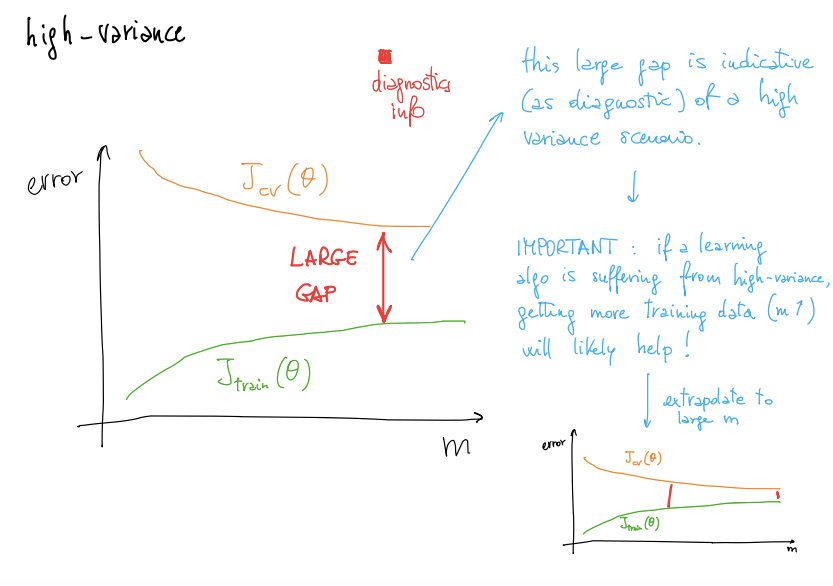
As the training set grows, training error may rise a bit while validation error drops. That is often a good sign: the model is becoming less dependent on quirks of a small sample.
What To Try Next
Diagnostics become useful only when they guide action.
| Possible Action | Usually Helps With |
|---|---|
| Get more training examples | High variance |
| Use a smaller set of features | High variance |
| Get additional features | High bias |
| Add polynomial features | High bias |
| Increase λ | High variance |
| Decrease λ | High bias |
This is one of the most practical lessons of the lecture: once you know whether the problem is bias or variance, many candidate fixes become either sensible or pointless almost immediately.
Study Material
Use the slide deck for the TVT splitting procedure, validation-based model selection, bias–variance diagrams, and the full set of learning-curve visuals.
View PDF →Use the transcript for the lecturer’s practical reasoning on debugging models, choosing the next action intelligently, and understanding why evaluation discipline matters in real ML work.
View PDF →Quick Review Quiz
1. Why is a low training error not enough to judge a model?
Because a model can fit the training set very well and still generalize poorly to new unseen examples.
2. What is the purpose of the test set?
It is used at the end to estimate how well the final model generalizes to data that was not used during training.
3. Why is a train/test split alone not enough for model selection?
Because if we use the test set to compare models or tune hyperparameters, the test set stops being an unbiased final evaluation set.
4. What is the role of the cross-validation set?
It is used to compare candidate models and tune hyperparameters such as polynomial degree or regularization strength.
5. Why should the test set be “hidden in the closet”?
Because looking at it too early leaks information into the modeling process and makes the final test estimate overly optimistic.
6. What does high bias mean?
High bias means the model is too simple and underfits the data.
7. What does high variance mean?
High variance means the model is too flexible, overfits the training set, and performs much worse on validation data.
8. What do learning curves show?
They show how training and validation errors change as the number of training examples increases.
9. When is getting more training data likely to help?
It is most likely to help when the model suffers from high variance.
10. What kind of problem is increasing λ usually meant to address?
Increasing λ is usually meant to reduce high variance by strengthening regularization.